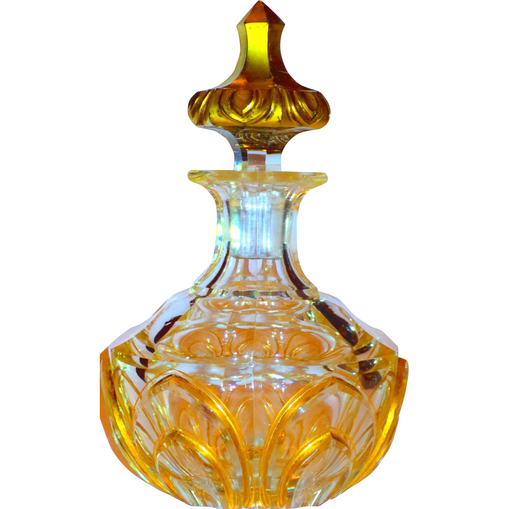

<div class="bannerWrppr">
  <div class="container ">
    <div class="tabCat">
      <div class="grid-container">
        <owl-carousel-o [options]="customOptions">
          @for (data of category; track data.id) {
          <ng-template carouselSlide>
            <mat-grid-list cols="2" rowHeight="350px">
              @for (card of cards | async; track card) {
              <mat-grid-tile [colspan]="card.cols" [rowspan]="card.rows">
                <mat-card class="dashboard-card">
                  <mat-card-header>
                    <mat-card-title>Viktor & Rolf Flowerbomb</mat-card-title>
                  </mat-card-header>
                  
                </mat-card>
              </mat-grid-tile>
              }
            </mat-grid-list>
          </ng-template>
          }
        </owl-carousel-o>
      </div>
    </div>
  </div>
</div>